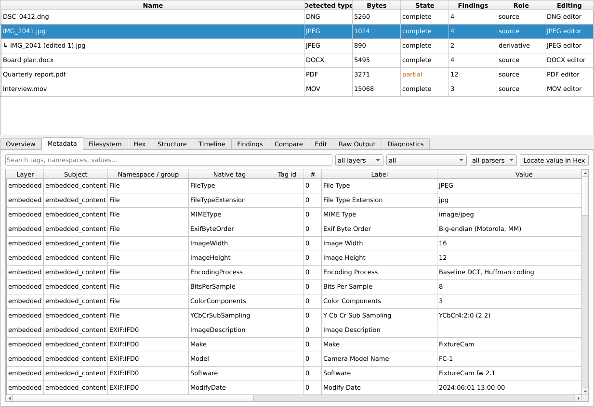
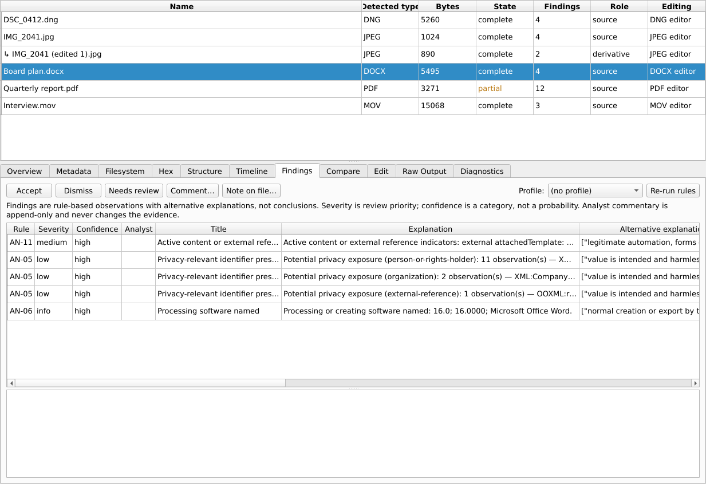

User guide
Metadata Workbench 0.5.0 · PDF (English and French)
- The main idea
- 1. Create a project
- 2. Add files
- 3. Read the metadata
- 4. Structure and hex views
- 5. Findings and timeline
- 6. Clean or edit a file
- 7. Export the edited copy
- 8. Integrity checks
- 9. Compare versions
- 10. Reports and audit log
- 11. What results do not prove
The main idea
Metadata Workbench never works on your original files. When you add a file, it is copied into a project, the copy is verified by its SHA-256 fingerprint and made read-only, and everything you look at or change is based on that copy. Every edit produces a new file, checked before it is kept. Your original stays exactly as it was; delete or replace it yourself if you want to.
1. Create a project
- Click New Project… in the toolbar. Give it a name (for example a case or a batch of documents to clean).
- Choose where to create the project folder (the default location is fine). The project opens immediately.
- Reopen a project later with Open Project… (⌘O).
2. Add files
Click Add Files… or Add Folder… (folders: recursive or top level only). Each selected item gets a row, including those that are refused (links, devices, missing or very large files) with the reason.
Before adding, you can tick Deep inspection to also capture the text of Office comments, which may contain personal data. The Policy menu chooses standard (normal) or strict (refuse to analyse if parser isolation is not fully available).
The Overview tab shows the file's fingerprints, its state and where its working copy is (Integrity ▾ ▸ Open the project's working folder opens it in the Finder).
3. Read the metadata

The Metadata tab lists every value found, without merging duplicates. Useful columns:
| Column | Meaning |
|---|---|
| Layer | filesystem (about the path: dates, size), embedded (inside the file), derived (computed, such as fingerprints) |
| Namespace | where the value lives, for example EXIF:IFD0, XMP:XMP-dc,
PDF. The same description can exist in EXIF, XMP and IPTC at once. |
| Status | present, missing, unsupported… An empty value is not the same as an absent one. |
| Privacy hint | a review category: location, device identifier, person or rights holder, contact, internal path, free text. It is a hint, not a determination. |
Select a row and press Locate value in Hex to find it in the bytes of the file. Not finding it does not mean it is absent: many values are displayed in converted form (GPS degrees, dates).
4. Structure and hex views
Structure shows where things are inside the file. Choose a parser at the top:
- ooxml (Word, Excel, PowerPoint): properties, relationships (a template path often reveals a user name and folder), comments, tracked changes by author, macros, embedded objects.
- pdfscan: number of revisions, values replaced by later revisions, signatures, JavaScript, automatic actions, attachments.
- archive: every member of a ZIP or TAR, with unsafe names and nested archives. Nothing is extracted.
- ffprobe (audio/video, needs ffmpeg): container and per-stream tags.
Hex shows the working copy 4 KiB at a time. Jump to an Offset (decimal or 0x…)
or Find text or byte patterns such as FF D8 FF.
5. Findings and timeline

Findings are observations for review, never verdicts. Examples: modification earlier than creation (AN-02), dates in the future (AN-03), conflicting values or PDF values changed between revisions (AN-04), privacy-relevant fields (AN-05), signatures present (AN-08), file changed during acquisition (AN-09), active content such as macros, PDF JavaScript or remote templates (AN-11).
Select a finding to see its explanation, other possible explanations and suggested follow-up. Record your decision with Accept, Dismiss, Needs review or Comment…; each entry keeps your name and the time and is never overwritten.
Timeline places dates on a common scale. Dates without a time zone stay “unanchored” unless you choose a zone assumption; you can also enter a camera clock offset. The assumptions in force are always stated, and the original values are never changed.
6. Clean or edit a file

- Select a file and open the Edit tab. If the format cannot be edited, the tab says why.
- Choose an action for each field (set to…, remove, remove all GPS, round GPS…),
or load a preset:
- Remove location — GPS and place names;
- Public sharing — location, device serial numbers, maker notes, embedded thumbnails (which can show the uncropped original), editing history and comments; keeps title, description, author and copyright;
- Remove organisation / author details;
- Remove all metadata — keeps the colour profile and orientation so the picture looks the same.
- Press Review plan. It lists every place that will change, current value → new value. Nothing is written yet.
- Press Confirm and create edited copy. The new copy is re-read: each change is checked, any other
change made by the writing tool is listed, and the content (picture, pages, sound, document text) is proven
unchanged. Only then is it saved, shown as
↳ name (edited 1).extunder its source. If a check fails, nothing is marked successful.
Good to know
- GPS can only be removed or rounded, never typed in.
- Office documents: you can also remove comments or accept/reject all tracked changes. These change what the document shows, so you must tick an extra acknowledgement. Macro-enabled files need explicit permission; their macros are kept unchanged.
- PDF: the copy is fully rewritten, so values that survived only in earlier revisions are gone too. You can remove JavaScript and automatic actions, attachments or review annotations. Visible text redaction is not offered.
- Camera RAW: DNG can be edited directly. For proprietary formats (CR3, NEF, ARW, RAF…), select a file from that camera and press Validate RAW model… once: a test edit is checked, and if it passes, editing is enabled for that camera model.
- Signed files and files with content credentials (C2PA) cannot be edited: it would break the signature.
- Hex ▸ Edit bytes… replaces bytes at an offset in a new copy, after a clear warning; the check proves that only those bytes changed.
- To “undo”, make a new copy from the original. Nothing is ever rewritten in place.
7. Export the edited copy
Edited copies live inside the project. Select one and choose Export copy… to save it wherever you want; existing files are never overwritten. Options:
- Write checksum files next to the copy (
.sha256,.md5…). Check them later withshasum -a 256 -c name.sha256. - Update a checksum manifest that listed the original (sha256sum, BSD or BagIt format): its line gets the new fingerprint and a dated backup of the manifest is kept.
8. Integrity checks
When you select a file, the app checks in the background that the working copy still matches its fingerprint, that the original (if still reachable) has not changed, and that any checksum files or registered manifests agree. The result appears at the top of the Overview. Use Integrity ▾ to Verify selected file, Verify all files, register Checksum manifests… or turn the automatic check off.
9. Compare versions

In Compare, choose files A and B. Compare lists the fields that differ. Version report goes further: fingerprints and size, changed byte ranges and the structure they belong to, metadata added, removed or changed, and whether the content itself changed. The verdict is identical, metadata only, content changed or different files. Versions of A lists the other versions of a file; Save report… writes HTML or JSON. Correlate project… suggests leads across all files (identical files, shared device identifiers, author name variants, close times or places).
10. Reports and audit log
The Export ▾ menu produces JSON, CSV (one value per row, protected against spreadsheet formulas) or a self-contained HTML report, plus redacted versions that remove privacy-relevant values and paths. Every action is recorded in an append-only, chained audit log.
11. What results do not prove
- An author field is a declared string, not a verified identity.
- A software name is a processing clue, not evidence of manipulation.
- Missing GPS or author fields are not evidence of deliberate removal.
- Matching fingerprints prove identical bytes only.
- A privacy clean-up report says what was found, removed and verified, and what was not examined (visible content, file names, other copies). It never claims that all private information was removed.
- A verified copy and its audit log document a process; on their own they do not establish admissibility or chain of custody before collection.
Guide d'utilisation
Metadata Workbench 0.5.0 · PDF (français et anglais) · L'interface de l'application est en anglais; les libellés sont donc indiqués en anglais.
- Le principe
- 1. Créer un projet
- 2. Ajouter des fichiers
- 3. Lire les métadonnées
- 4. Vues Structure et Hex
- 5. Constats et chronologie
- 6. Nettoyer ou éditer un fichier
- 7. Exporter la copie modifiée
- 8. Vérifications d'intégrité
- 9. Comparer des versions
- 10. Rapports et journal d'audit
- 11. Ce que les résultats ne prouvent pas
Le principe
Metadata Workbench ne travaille jamais sur vos fichiers originaux. Quand vous ajoutez un fichier, il est copié dans un projet; la copie est vérifiée par son empreinte SHA-256 et mise en lecture seule, et tout ce que vous consultez ou modifiez repose sur cette copie. Chaque modification produit un nouveau fichier, vérifié avant d'être conservé. Votre original reste exactement tel quel; supprimez-le ou remplacez-le vous-même au besoin.
1. Créer un projet
- Cliquez sur New Project… dans la barre d'outils. Donnez-lui un nom (par exemple un dossier d'enquête ou un lot de documents à nettoyer).
- Choisissez où créer le dossier du projet (l'emplacement par défaut convient). Le projet s'ouvre aussitôt.
- Rouvrez un projet plus tard avec Open Project… (⌘O).
2. Ajouter des fichiers
Cliquez sur Add Files… ou Add Folder… (dossiers : recursive ou top level only). Chaque élément sélectionné obtient une ligne, y compris ceux qui sont refusés (liens, périphériques, fichiers absents ou très volumineux), avec la raison.
Avant l'ajout, cochez Deep inspection pour saisir aussi le texte des commentaires Office, qui peut contenir des renseignements personnels. Le menu Policy permet de choisir standard (normal) ou strict (refuser l'analyse si l'isolement des analyseurs n'est pas entièrement disponible).
L'onglet Overview affiche les empreintes du fichier, son état et l'emplacement de sa copie de travail (Integrity ▾ ▸ Open the project's working folder l'ouvre dans le Finder).
3. Lire les métadonnées
L'onglet Metadata énumère chaque valeur trouvée, sans fusionner les doublons. Colonnes utiles :
| Colonne | Signification |
|---|---|
| Layer | filesystem (le chemin : dates, taille), embedded (dans le fichier), derived (calculé, comme les empreintes) |
| Namespace | où se trouve la valeur, par exemple EXIF:IFD0, XMP:XMP-dc,
PDF. Une même description peut exister à la fois en EXIF, XMP et IPTC. |
| Status | present, missing, unsupported… Une valeur vide n'est pas une valeur absente. |
| Privacy hint | une catégorie à examiner : localisation, identifiant d'appareil, personne ou titulaire de droits, coordonnées, chemin interne, texte libre. C'est un indice, pas une conclusion. |
Sélectionnez une ligne et cliquez sur Locate value in Hex pour la trouver dans les octets du fichier. Ne pas la trouver ne veut pas dire qu'elle est absente : bien des valeurs sont affichées sous forme convertie (degrés GPS, dates).
4. Vues Structure et Hex
Structure montre où se trouvent les éléments dans le fichier. Choisissez un analyseur en haut :
- ooxml (Word, Excel, PowerPoint) : propriétés, relations (un chemin de modèle révèle souvent un nom d'utilisateur et un dossier), commentaires, modifications suivies par auteur, macros, objets incorporés.
- pdfscan : nombre de révisions, valeurs remplacées par des révisions ultérieures, signatures, JavaScript, actions automatiques, pièces jointes.
- archive : chaque membre d'un ZIP ou d'un TAR, avec les noms dangereux et les archives imbriquées. Rien n'est extrait.
- ffprobe (audio/vidéo, nécessite ffmpeg) : balises du conteneur et de chaque flux.
Hex affiche la copie de travail par tranches de 4 Kio. Allez à un Offset (décimal ou
0x…) ou utilisez Find pour du texte ou des motifs d'octets comme FF D8 FF.
5. Constats et chronologie
Les Findings (constats) sont des observations à examiner, jamais des verdicts. Exemples : modification antérieure à la création (AN-02), dates dans le futur (AN-03), valeurs contradictoires ou valeurs PDF changées entre révisions (AN-04), champs touchant la vie privée (AN-05), signatures présentes (AN-08), fichier modifié pendant l'acquisition (AN-09), contenu actif comme des macros, du JavaScript PDF ou des modèles distants (AN-11).
Sélectionnez un constat pour voir son explication, les autres explications possibles et le suivi suggéré. Consignez votre décision avec Accept, Dismiss, Needs review ou Comment…; chaque entrée garde votre nom et l'heure et n'est jamais écrasée.
Timeline place les dates sur une échelle commune. Les dates sans fuseau horaire restent « non ancrées » à moins que vous ne choisissiez une hypothèse de fuseau; vous pouvez aussi saisir un décalage d'horloge d'appareil photo. Les hypothèses en vigueur sont toujours indiquées et les valeurs d'origine ne sont jamais modifiées.
6. Nettoyer ou éditer un fichier
- Sélectionnez un fichier et ouvrez l'onglet Edit. Si le format ne peut pas être édité, l'onglet indique pourquoi.
- Choisissez une action pour chaque champ (set to…, remove, remove all GPS, round
GPS…) ou chargez un préréglage (preset) :
- Remove location — GPS et noms de lieux;
- Public sharing — localisation, numéros de série d'appareils, notes du fabricant, vignettes incorporées (qui peuvent montrer l'original non recadré), historique d'édition et commentaires; conserve le titre, la description, l'auteur et le droit d'auteur;
- Remove organisation / author details;
- Remove all metadata — conserve le profil de couleur et l'orientation pour que l'image reste identique.
- Cliquez sur Review plan. Le plan énumère chaque endroit qui changera, valeur actuelle → nouvelle valeur. Rien n'est encore écrit.
- Cliquez sur Confirm and create edited copy. La nouvelle copie est relue : chaque modification est
vérifiée, toute autre modification faite par l'outil d'écriture est signalée, et le contenu (image, pages, son, texte
du document) est démontré inchangé. Ce n'est qu'ensuite qu'elle est enregistrée, sous la forme
↳ nom (edited 1).extsous sa source. Si une vérification échoue, rien n'est marqué comme réussi.
Bon à savoir
- Le GPS peut seulement être retiré ou arrondi, jamais saisi.
- Documents Office : vous pouvez aussi retirer les commentaires ou accepter/rejeter toutes les modifications suivies. Ces opérations changent ce que le document affiche; il faut donc cocher une confirmation supplémentaire. Les fichiers avec macros exigent une permission explicite; leurs macros sont conservées telles quelles.
- PDF : la copie est entièrement réécrite, de sorte que les valeurs qui ne subsistaient que dans des révisions antérieures disparaissent aussi. Vous pouvez retirer le JavaScript et les actions automatiques, les pièces jointes ou les annotations de révision. Le caviardage du texte visible n'est pas offert.
- RAW d'appareil photo : le DNG s'édite directement. Pour les formats propriétaires (CR3, NEF, ARW, RAF…), sélectionnez un fichier de cet appareil et cliquez une fois sur Validate RAW model… : une édition d'essai est vérifiée et, si elle réussit, l'édition est activée pour ce modèle d'appareil.
- Les fichiers signés et ceux qui portent des attestations de contenu (C2PA) ne peuvent pas être édités : cela briserait la signature.
- Hex ▸ Edit bytes… remplace des octets à une position donnée dans une nouvelle copie, après un avertissement clair; la vérification démontre que seuls ces octets ont changé.
- Pour « annuler », créez une nouvelle copie à partir de l'original. Rien n'est jamais réécrit sur place.
7. Exporter la copie modifiée
Les copies modifiées restent dans le projet. Sélectionnez-en une et choisissez Export copy… pour l'enregistrer où vous voulez; les fichiers existants ne sont jamais écrasés. Options :
- Écrire des fichiers de sommes de contrôle à côté de la copie (
.sha256,.md5…). Vérifiez-les plus tard avecshasum -a 256 -c nom.sha256. - Mettre à jour un manifeste qui énumérait l'original (format sha256sum, BSD ou BagIt) : sa ligne reçoit la nouvelle empreinte et une sauvegarde datée du manifeste est conservée.
8. Vérifications d'intégrité
Quand vous sélectionnez un fichier, l'application vérifie en arrière-plan que la copie de travail correspond toujours à son empreinte, que l'original (s'il est encore accessible) n'a pas changé et que les fichiers de sommes de contrôle ou les manifestes enregistrés concordent. Le résultat s'affiche en haut de l'Overview. Utilisez Integrity ▾ pour Verify selected file, Verify all files, enregistrer des Checksum manifests… ou désactiver la vérification automatique.
9. Comparer des versions
Dans Compare, choisissez les fichiers A et B. Compare énumère les champs qui diffèrent. Version report va plus loin : empreintes et taille, plages d'octets modifiées et la structure à laquelle elles appartiennent, métadonnées ajoutées, retirées ou modifiées, et changement éventuel du contenu lui-même. Le verdict est identical, metadata only, content changed ou different files. Versions of A énumère les autres versions d'un fichier; Save report… enregistre en HTML ou JSON. Correlate project… suggère des pistes parmi tous les fichiers (fichiers identiques, identifiants d'appareil communs, variantes de noms d'auteur, heures ou lieux rapprochés).
10. Rapports et journal d'audit
Le menu Export ▾ produit du JSON, du CSV (une valeur par ligne, protégé contre les formules de tableur) ou un rapport HTML autonome, ainsi que des versions caviardées (redacted) qui retirent les valeurs touchant la vie privée et les chemins. Chaque action est consignée dans un journal d'audit chaîné, en ajout seulement.
11. Ce que les résultats ne prouvent pas
- Un champ auteur est une chaîne déclarée, pas une identité vérifiée.
- Un nom de logiciel est un indice de traitement, pas une preuve de manipulation.
- L'absence de GPS ou d'auteur ne prouve pas un retrait délibéré.
- Des empreintes identiques ne prouvent que l'identité des octets.
- Un rapport de nettoyage indique ce qui a été trouvé, retiré et vérifié, et ce qui n'a pas été examiné (contenu visible, noms de fichiers, autres copies). Il n'affirme jamais que tous les renseignements personnels ont été retirés.
- Une copie vérifiée et son journal d'audit documentent un processus; à eux seuls, ils n'établissent ni l'admissibilité ni la chaîne de possession antérieure à la collecte.